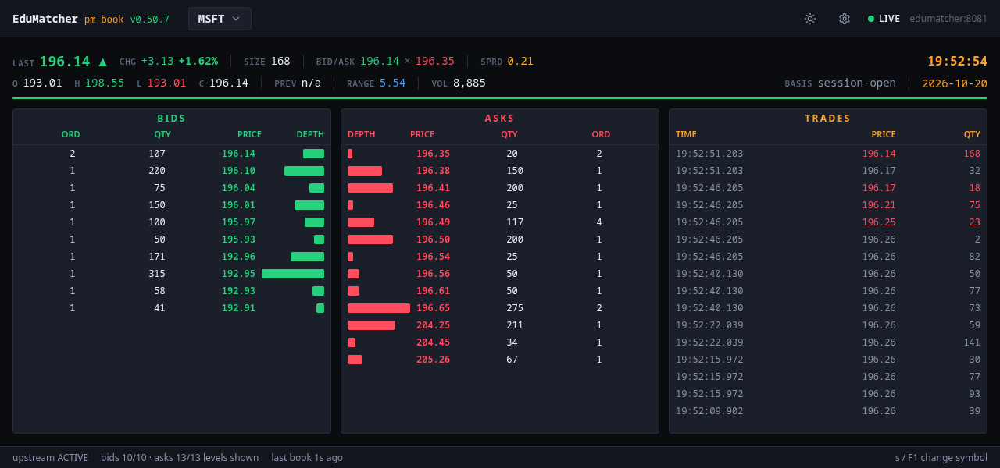
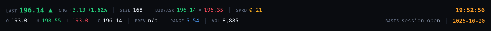

Order Book Viewer (pm-book)¶
Learning objectives
After reading this page you will understand:
- What the order book viewer shows, and how it relates to
pm-viewer - Which services must be running, and why the read-only API key is mandatory for this application
- How to start it with the whole stack, on its own in a container, on a separate display server, or as a local development server
- How the Compose setup wires it to the exchange
- What every field of the statistics header, the two ladders and the trade tape means
- How to read the connection states and the footer without mistaking a quiet market for a broken one
- Which environment variables an operator is most likely to adjust
Overview¶
pm-book is the web companion to the pm-viewer
terminal application: one symbol's full order book — every price level on both
sides — the session statistics above it and a trade tape beside it, in a
browser. Its source code lives in web-apps/book-gui/.
Like TapeDeck it is read-only. There is no order
entry, no login screen and no write path from the browser into the exchange.
Use it on a classroom projector while students trade against a book, beside
the Trading GUI to watch the effect of your own orders, or
on any machine where pm-viewer would need a terminal and direct access to the
engine's message bus.
Everything pm-viewer shows is here, field for field: last price and change,
bid, ask and spread, open/high/low/close, previous close, range, volume, and the
basis the change is measured against. What the browser adds is symbol switching
by URL, a dark and a light theme, font scaling, and a layout that fills
whatever screen it is shown on.
What starts when you run it¶
Running the viewer starts one server process, pm-book-bridge, which also
serves the web page. The bridge reads its market data from the
API Gateway — it never talks to the engine or to
pm-stats directly:
From pm-api-gwy |
Used for |
|---|---|
WS /api/v1/ws/market-data |
The live book and every new trade of the symbols being watched |
GET /api/v1/reference/symbols |
The symbol list in the picker, and each symbol's number of price decimals |
GET /api/v1/session |
The exchange session timezone and today's trading date |
GET /api/v1/history/trades |
The session's earlier trades, so the statistics and tape are complete when you open a book |
GET /api/v1/history/daily |
The previous close |
The one exception is the session phase in the top bar, which the bridge reads
from pm-md-gwy over CALF (TCP 5570) — the same source as TapeDeck, and one
that needs no key.
The bridge holds exactly one upstream WebSocket however many browser tabs are open, and subscribes to a symbol only while at least one tab is watching it. The read-only API key stays in the bridge; the browser never sees it.
flowchart LR
subgraph Browser["Browser tab(s)"]
UI["React app\n(Zustand)"]
end
UI -->|"WS /ws/stream\n(JSON frames)"| BRIDGE["pm-book-bridge\nFastify + Node :8094"]
BRIDGE -->|"WS /api/v1/ws/market-data\none connection, shared by every tab"| APIGWY["pm-api-gwy :8081\n(dashboards instance)"]
BRIDGE -->|"REST /api/v1/history/*\n/api/v1/reference/symbols"| APIGWY
APIGWY -->|"read-only history"| STATS["pm-stats\nstats.db"]
BRIDGE -.->|"LALF TCP :5600\noperational logging"| LOGSRV["pm-log-srv"]Prerequisites¶
| Requirement | Notes |
|---|---|
pm-api-gwy (API Gateway), dashboards instance, with a read-only API key |
Required for everything. The key is the credential with gateway_id: null; it is issued on the dashboards instance (port 8081 in the bundled configurations), not on desk (8080). Without the key the viewer has nothing to show. |
pm-stats (Statistics) |
Strongly recommended. The history endpoints read its database. Without it the viewer still works, but the statistics cover only the trades seen since the book was opened, and the header says so. |
pm-log-srv (Centralized Log Server) — optional |
Used only for the bridge's own operational logs. If it is unavailable the bridge logs to stdout, or to a local failover file. |
| Podman ≥ 4 or Docker ≥ 24 with a Compose plugin | Needed for the container run paths. |
| Node.js ≥ 20 and npm ≥ 10 | Needed only for local development without a container. |
The key is mandatory — unlike TapeDeck
TapeDeck gets its live prices from pm-md-gwy and uses the API key only
for history, so it still ticks without one. The order book viewer reads
its live data through pm-api-gwy too. Without a key the bridge starts,
logs PM_BOOK_API_KEY is unset — no market data or history can be read,
and never connects upstream. The app's own make up therefore refuses to
start without one.
Mandatory does not mean you have to find it: every bundled configuration already contains the key, and the local start paths look it up for you — see Where the read-only API key comes from.
Running the application¶
There are four ways to run the viewer. They differ only in how the bridge
learns two things: where pm-api-gwy is, and the read-only API key.
| Way | Where the exchange runs | Who supplies the address and the key |
|---|---|---|
| The whole stack | In the same Compose project | Found automatically |
| This app alone, in a container | On this host, in a VM, or elsewhere | You, or make up from the deployed configuration |
| On a separate display server | On another machine | You |
| Local development | Anywhere reachable | You, or make dev-env |
You only ever supply the key yourself when the exchange runs on another machine; everywhere else it is looked up for you, as described in Where the read-only API key comes from.
The whole stack (recommended)¶
This path requires nothing of you: it starts the exchange and every web application together, reads the read-only key out of the deployed configuration, and points the viewer at the backend by service name.
A released install (the one-line installer):
curl -fsSL https://raw.githubusercontent.com/johan162/EduMatcher/main/deployment/curl/install.sh | bash
cd ~/.edumatcher
./edumatcher.sh start
From a source checkout:
Then open http://localhost:8094. It opens on the first listed symbol; press
s to pick another. ./edumatcher.sh urls (released install) or the summary
make up-all prints lists every application's address.
An install from before the order book viewer existed
./edumatcher.sh update pulls new images but does not re-download
compose.yaml, so an older install does not gain the viewer from an
update. Re-run the one-line installer: it keeps your .env and data/
and fetches the current compose.yaml and edumatcher.sh. See
Installation.
Useful commands on this path:
| Task | Released install | Source checkout (deployment/docker) |
|---|---|---|
| Follow the viewer's log | ./edumatcher.sh logs book-gui |
podman logs -f edumatcher-book-gui |
| Rebuild only this image and restart | — | make up-all BUILD=1 GUI=book-gui |
| Move it to another host port | BOOK_GUI_PORT=8100 in .env |
BOOK_GUI_PORT=8100 in .env |
| Stop everything | ./edumatcher.sh stop |
make down-all |
Use docker in place of podman if that is your runtime. After changing the
engine configuration (make up-all CONFIG=<other>), start the stack again
rather than only the viewer: every bundled configuration carries a different
read-only key, and the key is resolved at start time.
This app alone, in a container¶
Use this when the exchange is already running outside Compose — as processes on
your host, in a VM, or on another machine. From web-apps/book-gui/:
Then open http://localhost:8094. make logs follows the bridge log,
make ps shows the container, and make down stops it.
How make up finds the key. An explicit PM_BOOK_API_KEY always wins:
Otherwise make up reads it from the deployed configuration
$EDUMATCHER_DATA_DIR/ref_data/engine_config.json — the same file the
exchange's own processes read — picking the first credential with
gateway_id: null (the dashboards instance is preferred when several carry
one). It prints which instance and port the key came from, and warns when
API_GATEWAY_URL points at a different port. With neither a key nor a deployed
configuration to read it from, make up stops with an explanation rather than
starting a viewer that can show nothing.
The address. The app's docker-compose.yml defaults API_GATEWAY_URL,
CALF_HOST and LOG_SRV_HOST to host.docker.internal, which is right on
Docker Desktop. On bare Linux Docker, make up adds docker-compose.linux.yml,
which maps that name to the host. On Podman, point them at
host.containers.internal:
export API_GATEWAY_URL=http://host.containers.internal:8081
export CALF_HOST=host.containers.internal
export LOG_SRV_HOST=host.containers.internal
make up
The key is valid on 8081, not 8080
API_GATEWAY_URL must point at the dashboards instance, where the
read-only credential is issued. desk on 8080 rejects it; the bridge then
logs refused PM_BOOK_API_KEY and the top bar stays on RECONNECTING.
Keep the port when you change the host.
If port 8094 is taken, move the host side of it. Pick something outside 8090–8095, which the other applications use:
All the web applications against one backend¶
web-apps/Makefile starts the log console, TapeDeck, the Trading GUI and the
order book viewer together, each from its own directory, and points them all at
one backend address:
cd web-apps
make up VM_BACKEND_IP=192.168.64.10 PM_BOOK_API_KEY=key-readonly-...
make up-book VM_BACKEND_IP=192.168.64.10 PM_BOOK_API_KEY=key-readonly-... # only this one
make logs-book
make down-book
VM_BACKEND_IP sets API_GATEWAY_URL=http://<ip>:8081, CALF_HOST=<ip> and
LOG_SRV_HOST=<ip> for the viewer. Pass the key explicitly when the backend runs in a VM: the
automatic look-up reads the deployed configuration from this host's data
directory.
Alternative: direct Compose commands¶
PM_BOOK_API_KEY='key-readonly-...' docker compose up --build -d
docker compose logs -f book-gui
docker compose down
With Podman, use podman-compose for the same commands.
Running on a separate display server¶
The viewer does not have to run on the machine that runs the exchange. A common
classroom set-up has the exchange on one server and the viewer on the machine
driving the projector. Nothing changes on the exchange side: the bridge is just
another read-only pm-api-gwy client.
| Exchange-side item | What to check |
|---|---|
pm-api-gwy |
It binds 0.0.0.0 by default. The display server must reach the dashboards instance — HTTP and WebSocket on TCP 8081 in the bundled configurations. |
| API key | The read-only credential (gateway_id: null) of that instance. It never leaves the display server's bridge. |
pm-stats |
Must be running on the exchange server for complete statistics; the viewer reaches it only through pm-api-gwy. |
pm-md-gwy |
For the session phase in the top bar. Make TCP 5570 reachable and set CALF_HOST; without it the phase shows Unknown. |
pm-log-srv |
Optional. Make TCP 5600 reachable and set LOG_SRV_HOST, or set LOG_SRV_ENABLED=false. |
| Firewall | Open 8081 and 5570 (and optionally 5600) from the display server to the exchange. Browsers need only the display server's 8094. |
On the display server, use a prepared image rather than building from source:
# Option A: the released image
podman pull ghcr.io/johan162/edumatcher-book-gui:<VERSION>
# Option B: an image tarball made with `make cdist` in web-apps/book-gui
podman load --input edumatcher-book-gui-<VERSION>.tar.xz
Then run it, pointing it at the exchange server:
mkdir -p logs
podman run -d --name book-gui \
--restart unless-stopped \
-p 8094:8094 \
-v "$PWD/logs:/app/logs" \
-e API_GATEWAY_URL=http://exchange.example.org:8081 \
-e PM_BOOK_API_KEY='key-readonly-...' \
-e LOG_SRV_ENABLED=false \
ghcr.io/johan162/edumatcher-book-gui:<VERSION>
Use the image name you pulled or loaded. For centralized logging, replace
LOG_SRV_ENABLED=false with -e LOG_SRV_HOST=exchange.example.org. Then open
http://display-server.example.org:8094.
If the page loads but the top bar shows RECONNECTING, the display server
serves the UI but cannot reach or authenticate with pm-api-gwy; the bridge
log says which.
Local development¶
From web-apps/book-gui/:
make install # once, and after a dependency change
PM_BOOK_API_KEY=key-readonly-... make dev # Vite on :8194, bridge on :5194
Open http://localhost:8194. The Vite dev server proxies /api and /ws to the
bridge on 127.0.0.1:5194, so the browser sees a single origin.
The bridge's connect targets default to 127.0.0.1, which is exactly where the
container stack publishes its ports, so make up-all in deployment/docker
plus make dev here needs nothing beyond the key. make dev-env prints it,
together with the matching API_GATEWAY_URL:
Keep dev-env out of the shell you start containers from
eval "$(make dev-env …)" exports API_GATEWAY_URL=http://127.0.0.1:8081
and PM_BOOK_API_KEY into your shell, and they stay there. That is right
for make dev, whose bridge runs on your own machine. It is wrong for a
container started later from the same shell: Compose hands the
exported API_GATEWAY_URL to the container, where 127.0.0.1 is the
container itself. The app's own make up in web-apps/book-gui — or
make up in web-apps/ without VM_BACKEND_IP — then starts a bridge
that cannot reach pm-api-gwy: the top bar stays on RECONNECTING, and the bridge log shows connections to 127.0.0.1:8081 being refused. The exported key also takes
precedence over make up's own look-up, and is stale once the exchange
runs another configuration.
make up-all and ./edumatcher.sh start are not affected: whenever they
find the read-only credential they set both values themselves.
Either load the variables for the development server only, in a subshell:
or clear them before starting a container from that shell:
The containerised viewer keeps running on 8094 at the same time, which makes it a convenient reference for your change on 8194. The full inner loop is described in The Development Loop.
Make targets¶
| Target | Description |
|---|---|
make install |
Install the npm workspace from the lockfile |
make dev / dev-web / dev-bridge |
Bridge and Vite together / only Vite / only the bridge |
make build / build-debug |
Production build / frontend with sourcemaps |
make typecheck / lint / format |
Type-check every workspace / the same / Prettier |
make test |
The Vitest suite: the bridge end to end against a fake pm-api-gwy, the web app against a fake bridge, and unit tests |
make cbuild |
Build the container image without starting it |
make up / down / restart / logs / ps |
Container lifecycle |
make cdist |
Build the image and export it as dist/edumatcher-book-gui-<VERSION>.tar.xz |
make clean / distclean |
Remove build output / also node_modules and the lockfile |
The version in the top bar comes from apps/web/src/version.json, which
scripts/mkbld.sh writes for every web application at release time.
Where the read-only API key comes from¶
The viewer gets its key exactly the way TapeDeck does, and from the same place — the two applications use the same key, under different variable names.
It is part of the configuration. pm-config-gen's
--api-gateway-readonly-key option adds a credential with gateway_id: null
and a randomly generated key to the dashboards API gateway instance (port
8081). Every bundled example configuration was generated with that option, so
each carries one, and each a different one:
api_gateways:
dashboards:
port: 8081
credentials:
- api_key: key-readonly-fq9m76
gateway_id: null
description: Generated read-only market-data key
Deploying a configuration copies the key into
<data dir>/ref_data/engine_config.json.
Every local start path looks it up and passes it to the bridge as
PM_BOOK_API_KEY:
| Start path | How it finds the key | With no key to be found |
|---|---|---|
make up-all / ./edumatcher.sh start |
Starts the exchange, waits for its configuration to be deployed, reads the key inside the exchange container, and exports it as both PM_BOOK_API_KEY and PM_TERMINAL_API_KEY, with API_GATEWAY_URL=http://edumatcher:<port>; then starts the web applications |
Starts anyway and warns; the viewer has nothing to show |
make up in web-apps/book-gui |
Reads $EDUMATCHER_DATA_DIR/ref_data/engine_config.json on this host. A PM_BOOK_API_KEY you set yourself always wins |
Stops with an explanation |
make dev-env GUI=book-gui |
Reads the key from the running exchange container and prints it as an export line for make dev |
Prints a warning |
Each picks the first enabled instance, in name order, with a gateway_id: null
credential — dashboards before desk — and takes that instance's port with
the key.
When you do pass it yourself. The look-up reads a configuration file on the
machine it runs on. When the exchange runs somewhere else — web-apps/Makefile
with VM_BACKEND_IP, or a separate display server
— there is no file to read, so you copy the key from that exchange's
engine_config.yaml (the gateway_id: null credential under dashboards) and
pass it as PM_BOOK_API_KEY.
A configuration without one. Add a credential with gateway_id: null to the
dashboards instance — in the Configuration GUI's gateway
settings, by hand, or by regenerating with --api-gateway-readonly-key — and
redeploy. Every configuration has its own key, so after switching
configuration restart through a path that looks it up again; a key copied from
another configuration is refused, and the viewer stays on RECONNECTING.
The key reads only public data — reference data, the market-data stream and history — and cannot place or see orders. It stays in the bridge and never reaches the browser.
The Compose setup¶
The viewer appears in three compose files. The service is the same in each; what differs is how it finds the exchange.
| File | Used by | API_GATEWAY_URL default |
Image |
|---|---|---|---|
deployment/curl/compose.yaml |
The one-line installer, edumatcher.sh |
http://edumatcher:8081 |
ghcr.io/johan162/edumatcher-book-gui:${EM_VERSION} |
deployment/docker/compose.guis.yaml |
make up-all |
http://edumatcher:8081 |
edumatcher-book-gui:latest, built from web-apps/book-gui |
web-apps/book-gui/docker-compose.yml |
The app's own make up |
http://host.docker.internal:8081 |
edumatcher-book-gui:latest, built locally |
In the two whole-stack files the viewer shares one Compose network with the
exchange container, which answers to the hostname edumatcher. The
source-checkout service looks like this:
book-gui:
image: edumatcher-book-gui:latest
container_name: ${CONTAINER_NAME:-edumatcher}-book-gui
depends_on:
- edumatcher
restart: unless-stopped
ports:
- "${BIND_ADDR:-127.0.0.1}:${BOOK_GUI_PORT:-8094}:8094"
environment:
HOST: "0.0.0.0"
PORT: "8094"
CORS_ORIGIN: "${CORS_ORIGIN:-*}"
MAX_WS_CLIENTS: "${MAX_WS_CLIENTS:-200}"
API_GATEWAY_URL: "${API_GATEWAY_URL:-http://edumatcher:8081}"
PM_BOOK_API_KEY: "${PM_BOOK_API_KEY:-}"
LOG_SRV_ENABLED: "${LOG_SRV_ENABLED:-true}"
CALF_HOST: "edumatcher"
LOG_SRV_HOST: "edumatcher"
LOG_SRV_PORT: "5600"
LOG_FAILOVER_DIR: "/app/logs"
volumes:
- book-gui-logs:/app/logs
Points worth knowing:
PM_BOOK_API_KEYis empty in the file on purpose.make up-alland./edumatcher.sh startstart the exchange first, read the key from the deployed configuration inside it, and export it for this service — the same key TapeDeck gets asPM_TERMINAL_API_KEY. See The read-only API key.BIND_ADDR(default127.0.0.1) decides who can open the page. Set it to0.0.0.0in.envto serve the viewer to other machines, and consider restrictingCORS_ORIGINwhen you do.- There is no data volume. The bridge keeps each watched symbol's session in
memory and rebuilds it from
pm-api-gwyon restart. The one volume,book-gui-logs(./logsfor the app's own compose file), holds the log failover file, written only whenpm-log-srvbecomes unreachable. - A health check (in the app's own compose file) polls
http://127.0.0.1:8094/api/bridge/statusevery 30 seconds. - Image build arguments
HTTP_PROXY,HTTPS_PROXY,NO_PROXYandNPM_STRICT_SSLare passed through for builds behind a corporate proxy, as for the other web applications.
A tour of the interface¶

The top bar, the statistics header, the BIDS and ASKS ladders with depth
bars scaled to the largest level on screen, the trade tape coloured by tick,
and the footer: upstream ACTIVE, how many levels of each side are shown, and
the age of the last book update.
The page has four parts, top to bottom: the top bar, the statistics header, the three panels BIDS, ASKS and TRADES, and the footer.
Top bar¶
EduMatcher pm-book v<version>on the left, as in every EduMatcher web application.- The symbol picker — the current symbol with a drop-down arrow. Click it,
or press
sorF1anywhere on the page. - The session indicator — the exchange session phase as a coloured badge,
the next phase and the time left to it (
Continuous → Closing Auction in 03:08), and the clock in the exchange session timezone, exactly as the Trading GUI shows it. The countdown appears only while a transition is scheduled; the badge readsUnknownuntilpm-md-gwyhas reported the phase, and whenever it cannot be reached. - Theme (sun/moon): switches between the dark and the light palette.
- Settings (cog): font size, maximum levels and zebra rows — see Settings.
- Connection indicator:
LIVE,RECONNECTINGorOFFLINE, followed by thehost:portof thepm-api-gwyinstance the bridge reads — see Connection states.
Choosing a symbol¶
The picker works as pm-viewer's does. Typing narrows the list by prefix
(A offers the symbols that start with A, not every symbol containing one),
↑/↓ move the selection, Enter switches and Esc closes. A click
works too.
Every book has its own URL: /book/<SYMBOL>, for example
http://localhost:8094/book/AAPL. Bookmark it, or open several tabs on different
symbols — each tab watches one symbol. The bare address / opens the book you
viewed last in this browser, or the first listed symbol. A URL naming a symbol
that is not listed shows <SYMBOL> is not a listed symbol instead of an empty
book.
The statistics header¶

MSFT up 1.62%. This exchange has no previous close on record yet, so Prev
is n/a and change is measured from the session open (Basis session-open).
The green line under the header: the close is above that reference.
Two rows, the same fields as pm-viewer's header. The reference price that
change and colour are measured against is the previous close when one is known,
otherwise the session open.
| Field | Meaning |
|---|---|
| Last | Price of the last trade, with ▲ / ▼ / ▬ against the reference, green when up and red when down |
| Chg | Last minus the reference, and the same as a percentage |
| Size | Quantity of the last trade |
| Bid/Ask | Best bid (green) × best ask (red) |
| Sprd | Ask minus bid |
| clock | Current time in the exchange session timezone (hover for the zone name) |
| O / H / L / C | The session's open, high, low and latest close, from every trade of the day |
| Prev | The previous trading day's close, n/a when there is none |
| Range | High minus low |
| Vol | Total quantity traded this session |
| Basis | What the change is measured against: prev-close, session-open, or live since HH:MM |
| date | Today's date in the exchange session timezone |
A thin line under the header shows the session's direction: green when the close is above the reference, red when below, grey when level.
What live since HH:MM means
When the bridge cannot read the session's history — pm-stats is not
running, or its database does not exist yet — it still shows the book and
records every trade it sees from then on. The statistics are then correct
only for that period, and the Basis field says so in amber, with the time
the recording started. This is the web equivalent of running pm-viewer
without a stats database. Times are then in UTC, because the session
timezone also comes from pm-stats.
All times, the clock and the date use the exchange session timezone recorded by
pm-stats, not the timezone of the browser — so a viewer in another country
reads the same times as the exchange.
BIDS and ASKS¶
The two ladders mirror each other about the centre, as in pm-viewer, with the
best price at the top of each:
| BIDS columns | ASKS columns | |
|---|---|---|
| Ord — number of resting orders at the level | Depth — bar, growing outward to the right | |
| Qty — total quantity at the level | Price | |
| Price | Qty | |
| Depth — bar, growing outward to the left | Ord |
The depth bars are scaled to the largest quantity among the levels on screen, so the largest visible level fills its bar. Prices use each symbol's own number of decimals from the reference data.
The ladders show the levels the gateway publishes (aggregated per price — never individual orders).
TRADES¶
The trade tape, newest first: Time (session timezone, to the millisecond), Price and Qty. Each print is coloured by its tick — green when its price is above the print before it, red when below, grey when equal.
When you open a book the tape already holds the session's earlier trades, read
from history. The bridge keeps the newest TAPE_MAX (500) prints per symbol;
the statistics count every trade of the session regardless.
How many levels are shown¶
The three panels share one row count. By default (Max levels: Fit) it is
whatever fits the window, like pm-viewer in a terminal — make the window taller
to see deeper into the book. The Settings popover can cap it at 10, 20 or 50
levels, like pm-viewer --depth.
The panels never reflow into a single column: in a narrow window the page scrolls sideways instead.
Footer¶
upstream ACTIVE— the state of the bridge's connection topm-api-gwy; shown in amber whenever it is anything else.bids 12/12 · asks 9/15 levels shown— how many of each side's levels are on screen, out of how many there are. A truncated ladder is never silent:9/15means six more ask levels exist below the fold.last book 2s ago— the age of the most recent book update. It keeps counting in a quiet market; that is normal, and the book shown is still current.no book yetmeans the symbol has not had a book since it was opened.s / F1 change symbol— the keyboard hint.
Settings¶
The cog in the top bar opens the settings. All of them are stored per browser.
| Setting | Choices | Default | Notes |
|---|---|---|---|
| Font size | XS, S, M, L, XL, XXL | XS | Scales the whole page. Works in Chrome and Safari only |
| Max levels | Fit, 10, 20, 50 | Fit | pm-viewer's --depth |
| Zebra rows | on / off | off | pm-viewer's --zebra-lines |
| Theme (top-bar button) | dark / light | dark | Light is meant for bright rooms and projectors |
Connection states¶
Two connections are involved, and the viewer reports both:
| Indicator | Meaning | What you see |
|---|---|---|
LIVE (green) |
The browser is connected to the bridge, and the bridge to pm-api-gwy |
The live book |
RECONNECTING (amber) |
The browser is connected to the bridge, but the bridge's upstream connection is down or not yet authenticated | The last values received, with upstream RECONNECTING or upstream DOWN in the footer |
OFFLINE (red) |
The browser has lost its connection to the bridge | A Disconnected from pm-book-bridge banner; values are hidden rather than shown stale. The page reconnects by itself |
The bridge reconnects upstream by itself, backing off from half a second to 15
seconds between attempts. When a working connection drops, the footer shows
upstream RECONNECTING for the first 30 seconds (UPSTREAM_DOWN_AFTER_SEC) and
upstream DOWN after that. Before the first successful connection, and at once
when pm-api-gwy rejects the key, it shows upstream DOWN.
No trade is lost across a short outage. On reconnect the bridge asks
pm-api-gwy to resume each symbol's trades from the last one it saw. If the
gap is longer than the gateway retains (market_data_cache_sec, 60 seconds by
default — see API Gateway), the bridge rebuilds that
symbol's statistics and tape from history instead, and logs that it did.
Configuration reference¶
The bridge is configured entirely with environment variables. Most
installations set only PM_BOOK_API_KEY and, outside the whole stack,
API_GATEWAY_URL and LOG_SRV_HOST.
Compose and host side¶
| Variable | Default | Purpose |
|---|---|---|
BOOK_GUI_PORT |
8094 |
Host port the container is published on. Set it in .env for the whole stack, or on the command line for the app's own make up |
BIND_ADDR |
127.0.0.1 |
Whole stack only: host address the port is published on; 0.0.0.0 exposes it to the network |
EDUMATCHER_DATA_DIR |
— | App's own make up only: where to find ref_data/engine_config.json to read the key from |
Bridge¶
| Variable | Default (dev / container) | Purpose |
|---|---|---|
HOST / PORT |
127.0.0.1 / 5194 — container 0.0.0.0 / 8094 |
Bridge bind address and port |
CORS_ORIGIN |
* |
CORS allow-list; restrict it to your site's origin when the viewer is exposed beyond localhost |
STATIC_DIR |
— (container: the built frontend) | Serve the built web UI from this directory |
MAX_WS_CLIENTS |
200 |
Maximum browser tabs; further connections are refused |
WS_HEARTBEAT_SEC |
5 |
How often every tab receives the bridge's status |
WS_PING_SEC / WS_PING_MAX_MISSED |
10 / 2 |
Ping to each tab, and missed replies before a dead tab is dropped |
WS_MAX_BUFFERED_BYTES |
5000000 |
A tab whose outgoing buffer exceeds this (a stalled browser) is disconnected |
TAPE_MAX |
500 |
Trades kept per watched symbol for the TRADES panel |
Upstream (pm-api-gwy)¶
| Variable | Default (dev / container) | Purpose |
|---|---|---|
API_GATEWAY_URL |
http://127.0.0.1:8081 — app compose http://host.docker.internal:8081, whole stack http://edumatcher:8081 |
Base URL of the dashboards instance. The market-data WebSocket URL is derived from it (ws://…/api/v1/ws/market-data, or wss:// for https://) |
PM_BOOK_API_KEY |
— (required) | The read-only (gateway_id: null) key of that instance. Never sent to the browser |
UPSTREAM_PING_SEC / UPSTREAM_PING_MAX_MISSED |
10 / 3 |
Liveness check of the upstream WebSocket |
UPSTREAM_DOWN_AFTER_SEC |
30 |
How long RECONNECTING lasts before it is reported as DOWN |
Session phase (pm-md-gwy)¶
| Variable | Default (dev / container) | Purpose |
|---|---|---|
CALF_HOST / CALF_PORT |
127.0.0.1 / 5570 — app compose host.docker.internal, whole stack edumatcher |
pm-md-gwy, for the session phase in the top bar. No key needed |
CALF_CLIENT_ID |
pm-book-bridge |
Name the bridge gives in CALF HELLO |
Logging¶
| Variable | Default (dev / container) | Purpose |
|---|---|---|
LOG_SRV_ENABLED |
true |
false logs to stdout and skips even the startup probe |
LOG_SRV_HOST / LOG_SRV_PORT |
127.0.0.1 / 5600 — app compose host.docker.internal, whole stack edumatcher |
pm-log-srv |
LOG_SRV_CLIENT_ID |
pm-book-bridge |
Name the bridge registers with at the log server |
LOG_SRV_INSTANCE |
— | Optional suffix that tells several viewers' logs apart |
LOG_CONNECT_TIMEOUT_SEC |
0.5 |
Startup probe and each reconnect attempt |
LOG_FAILOVER_TIMEOUT_SEC |
30 |
How long a lost log-server connection may last before the bridge switches, for good, to a local file |
LOG_QUEUE_MAXSIZE |
2000 |
Log records buffered while reconnecting |
LOG_FAILOVER_DIR |
<data dir>/logs — container /app/logs |
Where that local file goes |
If pm-log-srv is not reachable at startup the bridge logs to stdout, which
make logs or podman logs show.
Checking the bridge¶
GET /api/bridge/status on the viewer's port describes the bridge's state as
JSON:
| Field | Meaning |
|---|---|
upstream / since |
ACTIVE, RECONNECTING or DOWN, and since when |
source |
The host:port of pm-api-gwy |
symbols |
How many symbols the reference data lists |
watched |
Each watched symbol, with the number of tabs watching it |
wsClients |
Connected browser tabs |
logging |
Where the bridge's logs are going right now |
Troubleshooting¶
| Symptom | Likely cause | What to check |
|---|---|---|
make up stops with EDUMATCHER_DATA_DIR is not set or No read-only credential |
There is no key to start with | Set EDUMATCHER_DATA_DIR, or pass PM_BOOK_API_KEY=... |
Top bar stays RECONNECTING, footer upstream DOWN; the log says PM_BOOK_API_KEY is unset |
The container was started without a key | Start it through make up, make up-all or ./edumatcher.sh start, or pass the key |
Top bar stays RECONNECTING; the log says refused PM_BOOK_API_KEY |
The key is wrong for that instance — typically API_GATEWAY_URL points at desk (8080), or the key belongs to a different engine configuration |
Point API_GATEWAY_URL at port 8081; after switching configuration, restart the whole stack so the key is read again |
Top bar stays RECONNECTING, nothing in the log about the key |
The bridge cannot reach pm-api-gwy |
Check API_GATEWAY_URL; on Podman use host.containers.internal; check that pm-api-gwy is running |
The session badge in the top bar stays Unknown |
The bridge cannot reach pm-md-gwy, or it is not running |
Check CALF_HOST/CALF_PORT and that TCP 5570 is reachable from the bridge; a badge that resolves after a second or two at exchange start is normal |
| Red Disconnected from pm-book-bridge banner | The browser cannot reach the bridge | Is the container running (make ps, podman ps)? Is the port right? |
Basis says live since HH:MM; times are in UTC |
History is unavailable — pm-stats is not running or has not created its database |
Start pm-stats, then reload the page: a symbol's history is read again when it is next opened with no other tab watching it |
| Waiting for the symbol list… never goes away | The bridge could not read /api/v1/reference/symbols |
See the rows about RECONNECTING above |
<SYMBOL> is not a listed symbol |
The URL names a symbol the exchange does not list | Press s and choose one |
| A ladder ends before the book does | More levels exist than fit the window, or Max levels caps them | Read the footer (asks 9/15); make the window taller or set Max levels to Fit |
A container started with make up stays RECONNECTING; its log shows 127.0.0.1:8081 refusing connections |
API_GATEWAY_URL=http://127.0.0.1:8081 was left in the shell by eval "$(make dev-env …)" |
unset API_GATEWAY_URL PM_BOOK_API_KEY and run make up again — see Local development |
| An older curl install has no viewer on 8094 | update does not fetch a new compose.yaml |
Re-run the one-line installer |
Related documentation¶
pm-viewer— Order Book Viewer — the terminal application this one mirrors- API Gateway — the market-data WebSocket and history endpoints the bridge reads
- Statistics and Reporting —
pm-stats, which records the history - Installation — the container stack,
.envand the read-only API key - Trader Information Terminal — the sibling read-only display, with which it shares its structure and deployment conventions
- Centralized Log Server — the bridge's optional logging destination
docs-design/EduMatcher-Book-GUI.md— the design document (repository checkout only)web-apps/book-gui/README.md— the implementation's own reference (repository checkout only)